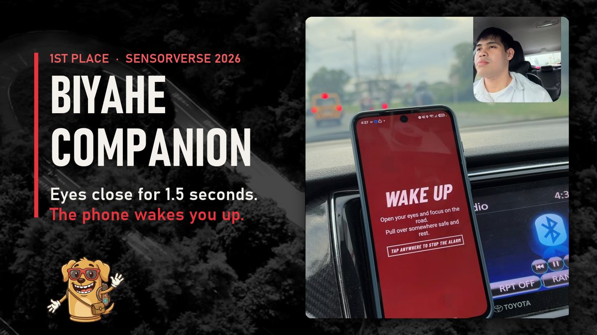

1st place · Sensorverse 2026
Biyahe Companion
An Android driver-safety app. It tells you to slow down when you speed, wakes you up when your eyes close for 1.5 seconds, and texts your contacts your location after a crash. 11 phone sensors, offline-first.
KotlinJetpack ComposeRoomFirebaseCameraX